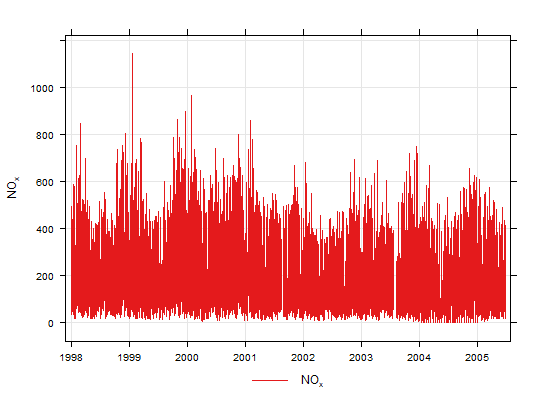

Plot time series quickly, perhaps for multiple pollutants, grouped or in separate panels.
timePlot(mydata, pollutant = "nox", group = FALSE, stack = FALSE, normalise = NULL, avg.time = "default", data.thresh = 0, statistic = "mean", percentile = NA, date.pad = FALSE, type = "default", cols = "brewer1", plot.type = "l", key = TRUE, log = FALSE, windflow = NULL, smooth = FALSE, ci = TRUE, y.relation = "same", ref.x = NULL, ref.y = NULL, key.columns = 1, key.position = "bottom", name.pol = pollutant, date.breaks = 7, date.format = NULL, auto.text = TRUE, ...)
date field and at least one variable to plot.pollutant =
c("nox", "co") should be used.FALSE, which means they are plotted in separate panels
with their own scaled. If TRUE then they are plotted on
the same plot with the same scale.TRUE the time series will be stacked by
year. This option can be useful if there are several years worth
of data making it difficult to see much detail when plotted on a
single plot.normalise can take two values,
either “mean” or a string representing a date in UK
format e.g. "1/1/1998" (in the format dd/mm/YYYY). If
normalise = "mean" then each time series is divided by
its mean value. If a date is chosen, then values at that date
are set to 100 and the rest of the data scaled accordingly.
Choosing a date (say at the beginning of a time series) is very
useful for showing how trends diverge over time. Setting
group = TRUE is often useful too to show all time series
together in one panel.period = "2 month". See
function timeAverage for further details on this.avg.time. A value of zero
means that all available data will be used in a particular
period regardless if of the number of values available.
Conversely, a value of 100 will mean that all data will need to
be present for the average to be calculated, else it is recorded
as NA. Not used if avg.time = "default".avg.time = "default".statistic = "percentile" and when aggregating the data
with avg.time. More than one percentile level is allowed
for type = "default" e.g. percentile = c(50, 95).
Not used if avg.time = "default".date.pad = TRUE the
time gaps between the chunks are shown properly, rather than
with a line connecting each chunk. For irregular data, set to
FALSE. Note, this should not be set for type other
than default.type determines how the data are split i.e.
conditioned, and then plotted. The default is will produce a
single plot using the entire data. Type can be one of the
built-in types as detailed in cutData e.g.
“season”, “year”, “weekday” and so on. For
example, type = "season" will produce four plots --- one
for each season.
It is also possible to choose type as another variable in
the data frame. If that variable is numeric, then the data will
be split into four quantiles (if possible) and labelled
accordingly. If type is an existing character or factor
variable, then those categories/levels will be used directly.
This offers great flexibility for understanding the variation of
different variables and how they depend on one another.
Only one type is currently allowed in timePlot.RColorBrewer colours --- see the
openair openColours function for more details. For
user defined the user can supply a list of colour names
recognised by R (type colours() to see the full list). An
example would be cols = c("yellow", "green", "blue")lattice plot type, which is a line
(plot.type = "l") by default. Another useful option is
plot.type = "h", which draws vertical lines.TRUE.FALSE. If TRUE a well-formatted log10 scale is
used. This can be useful for plotting data for several different
pollutants that exist on very different scales. It is therefore
useful to use log = TRUE together with group =
TRUE.windflow = list(col = "grey", lwd = 2, scale = 0.1). This
option requires wind speed (ws) and wind direction
(wd) to be available.
The maximum length of the arrow plotted is a fraction of the
plot dimension with the longest arrow being scale of the
plot x-y dimension. Note, if the plot size is adjusted manually
by the user it should be re-plotted to ensure the correct wind
angle. The list may contain other options to panel.arrows
in the lattice package. Other useful options include
length, which controls the length of the arrow head and
angle, which controls the angle of the arrow head.
This option works best where there are not too many data to
ensure over-plotting does not become a problem.FALSE.ci
determines whether the 95% confidence intervals are shown.ref.y for details. In this case the
correct date format should be used for a vertical line e.g.
ref.x = list(v = as.POSIXct("2000-06-15"), lty = 5).ref.y =
list(h = 50, lty = 5) will add a dashed horizontal line at 50.
Several lines can be plotted e.g. ref.y = list(h = c(50,
100), lty = c(1, 5), col = c("green", "blue")). See
panel.abline in the lattice package for more
details on adding/controlling lines.columns to be less than the number of pollutants.name.pol = "nox before change"
can be used. If more than one pollutant is plotted then use
c e.g. name.pol = c("nox here", "o3 there").date.breaks
up or down.timePlot generally sets the date format
sensibly there can be some situations where the user wishes to
have more control. For format types see strptime. For
example, to format the date like “Jan-2012” set
date.format = "%b-%Y".TRUE (default) or FALSE. If
TRUE titles and axis labels will automatically try and
format pollutant names and units properly e.g. by subscripting
the ‘2’ in NO2.cutData and lattice:xyplot. For example,
timePlot passes the option hemisphere = "southern"
on to cutData to provide southern (rather than default
northern) hemisphere handling of type = "season".
Similarly, most common plotting parameters, such as
layout for panel arrangement and pch and
cex for plot symbol type and size and lty and
lwd for line type and width, as passed to xyplot,
although some maybe locally managed by openair on route,
e.g. axis and title labelling options (such as xlab,
ylab, main) are passed via quickText to
handle routine formatting. See examples below.As well as generating the plot itself, timePlot
also returns an object of class ``openair''. The object includes
three main components: call, the command used to generate
the plot; data, the data frame of summarised information
used to make the plot; and plot, the plot itself. If
retained, e.g. using output <- timePlot(mydata, "nox"),
this output can be used to recover the data, reproduce or rework
the original plot or undertake further analysis.
An openair output can be manipulated using a number of generic
operations, including print, plot and
summary.
The timePlot is the basic time series plotting function in
openair. Its purpose is to make it quick and easy to plot
time series for pollutants and other variables. The other purpose
is to plot potentially many variables together in as compact a way
as possible.
The function is flexible enough to plot more than one variable at
once. If more than one variable is chosen plots it can either show
all variables on the same plot (with different line types)
on the same scale, or (if group = FALSE) each
variable in its own panels with its own scale.
The general preference is not to plot two variables on the same
graph with two different y-scales. It can be misleading to do so
and difficult with more than two variables. If there is in
interest in plotting several variables together that have very
different scales, then it can be useful to normalise the data
first, which can be down be setting the normalise option.
The user has fine control over the choice of colours, line width and line types used. This is useful for example, to emphasise a particular variable with a specific line type/colour/width.
timePlot works very well with selectByDate,
which is used for selecting particular date ranges quickly and
easily. See examples below.
By default plots are shown with a colour key at the bottom and in
the case of multiple pollutants or sites, strips on the left of
each plot. Sometimes this may be overkill and the user can opt to
remove the key and/or the strip by setting key and/or
strip to FALSE. One reason to do this is to maximise
the plotting area and therefore the information shown.
TheilSen, smoothTrend,
linearRelation, selectByDate and
timeAverage for details on selecting averaging
times and other statistics in a flexible way
# basic use, single pollutant timePlot(mydata, pollutant = "nox")# two pollutants in separate panels ## Not run: timePlot(mydata, pollutant = c("nox", "no2")) # two pollutants in the same panel with the same scale ## Not run: timePlot(mydata, pollutant = c("nox", "no2"), group = TRUE) # alternative by normalising concentrations and plotting on the same scale#> function (x, center = TRUE, scale = TRUE) #> UseMethod("scale") #> <bytecode: 0x00000000283f1830> #> <environment: namespace:base> #>## Not run: ------------------------------------ # timePlot(mydata, pollutant = c("nox", "co", "pm10", "so2"), group = TRUE, avg.time = # "year", normalise = "1/1/1998", lwd = 3, lty = 1) ## --------------------------------------------- # examples of selecting by date # plot for nox in 1999 ## Not run: timePlot(selectByDate(mydata, year = 1999), pollutant = "nox") # select specific date range for two pollutants ## Not run: ------------------------------------ # timePlot(selectByDate(mydata, start = "6/8/2003", end = "13/8/2003"), # pollutant = c("no2", "o3")) ## --------------------------------------------- # choose different line styles etc ## Not run: timePlot(mydata, pollutant = c("nox", "no2"), lty = 1) # choose different line styles etc ## Not run: ------------------------------------ # timePlot(selectByDate(mydata, year = 2004, month = 6), pollutant = # c("nox", "no2"), lwd = c(1, 2), col = "black") ## --------------------------------------------- # different averaging times #daily mean O3 ## Not run: timePlot(mydata, pollutant = "o3", avg.time = "day") # daily mean O3 ensuring each day has data capture of at least 75% ## Not run: timePlot(mydata, pollutant = "o3", avg.time = "day", data.thresh = 75) # 2-week average of O3 concentrations ## Not run: timePlot(mydata, pollutant = "o3", avg.time = "2 week")